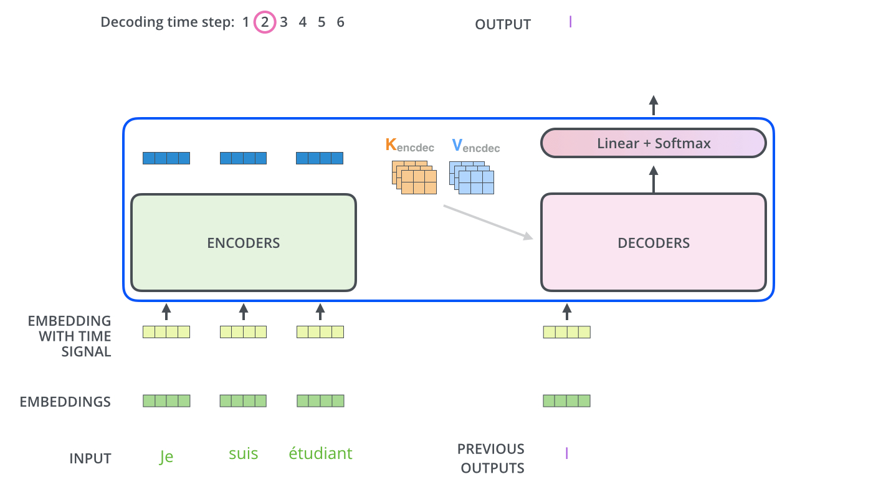
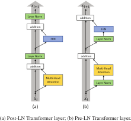
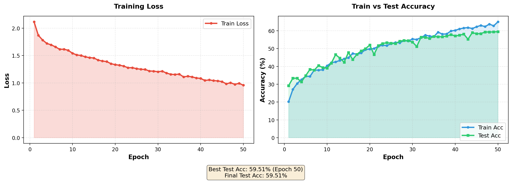
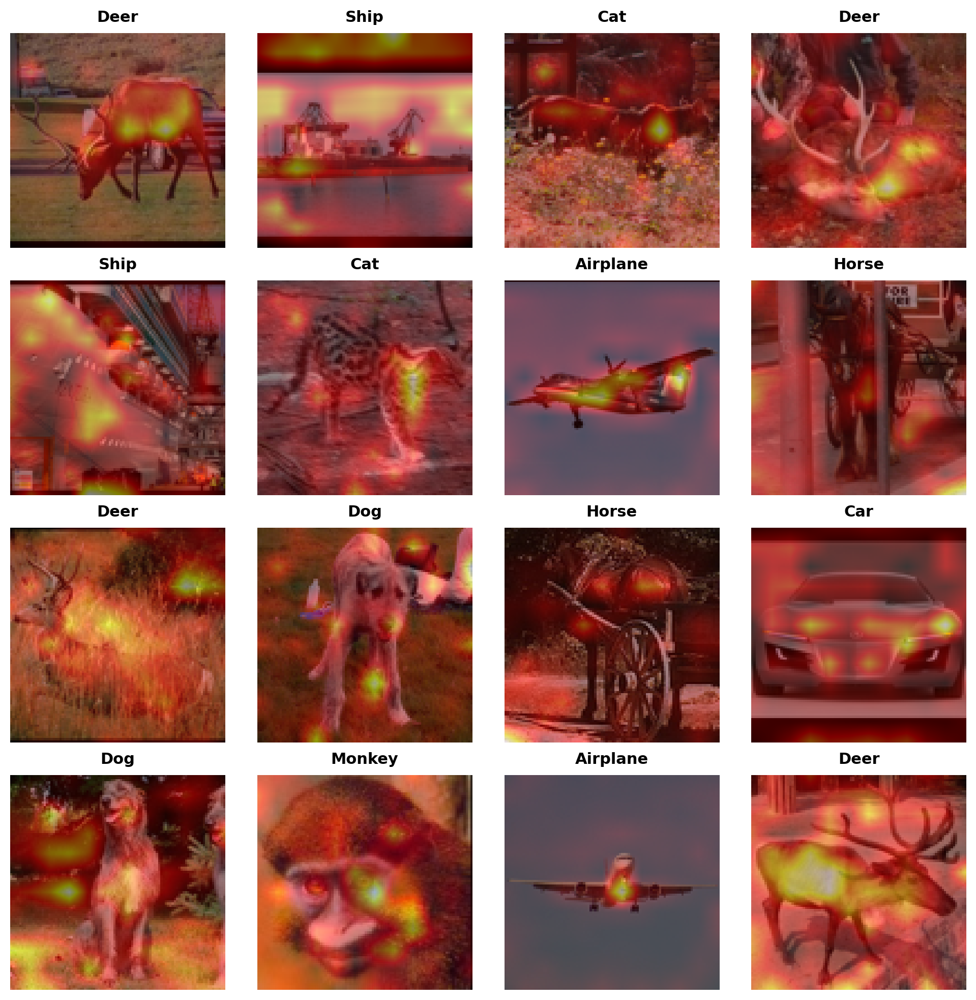
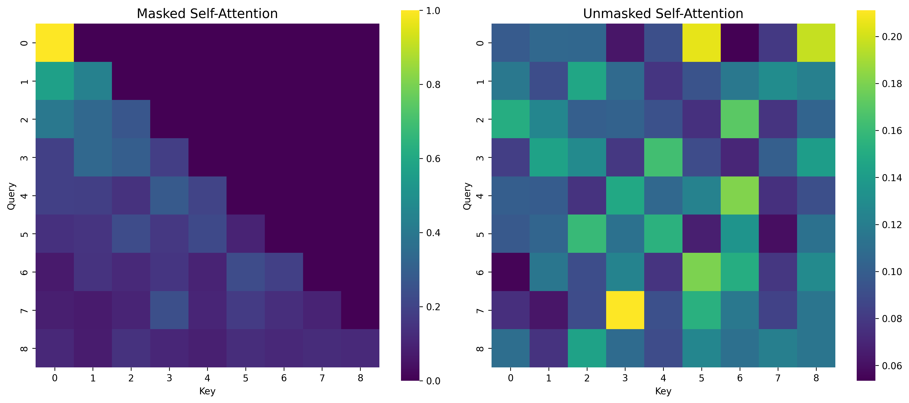

Transformer Model
It uses encoder-decoder structure where both encoder block and decoder block have an attention mechanism.
Positional Encoding
If $d_{model}$ is our embedding dimension, and $T$ is the sequence length, the input can be represented as
$$X\in\mathbb{R}^{T \times d_{model}}$$As an example, we have $d_{model}=768$ and a sequence length $T=9$, for the following:

Since the model contains not recurrence and no convolution, in order for model to make use of the sequence, we must inject some information about the relative or absolute position of tokens in the sequence. To this end, we add “positional encodings” to the input embeddings element wise as:
$$X = X + PE, \quad X, PE \in \mathbb{R}^{T\times d_{model}}$$The positional encodings have the same dimension $d_model$ as the embeddings, so that the two can be summed. There are many choices but the original paper uses the following:
$$ PE(pos, 2i) = sin(pos/ 10000^{2i/d_{model}}) $$$$ PE(pos, 2i + 1) = cos(pos/ 10000^{2i/d_{model}}) $$
where $pos$ is the position and $i$ is the dimension.
class PositionalEncoding(nn.Module):
def __init__(self, L, d_model):
super().__init__()
pe = torch.zeros(L, d_model, dtype=torch.float32)
position = torch.arange(L, dtype=torch.float32).unsqueeze(1)
div_term = 10_000 ** (torch.arange(0, d_model, 2, dtype=torch.float32) / d_model)
pe[:, 0::2] = torch.sin(position / div_term)
pe[:, 1::2] = torch.cos(position / div_term)
self.register_buffer('pe', pe)
def forward(self, x):
return x + self.pe[:x.size(1)].unsqueeze(0)
# Parameters
L = 100 # sequence length
d_model = 768 # embedding dimension
# Create positional encoding
pe = PositionalEncoding(L, d_model)
# Extract the matrix (L x d_model)
pos_encoding = pe.pe.numpy()
plt.figure(figsize=(10, 6))
plt.imshow(pos_encoding, aspect='auto', cmap='viridis')
plt.colorbar(label="Encoding value")
plt.xlabel("Embedding dimension")
plt.ylabel("Position")
plt.title("Positional Encoding Heatmap")
plt.tight_layout()
plt.show()

Attention
The attention mechanism describes how “important” some features are and how much we want to “attend” to them. The kind of attention we use here describes a weighted average of (sequence) elements with the weights dynamically computed based on an input query and element’s keys.
-
Query: The query is a feature vector describing what we are looking for in the sequence, i.e., what we would we maybe pay attention to.
-
Keys: For each input element, we have a key which is again a feature vector. This feature vector roughly describes what the element is “offering”, or when it might be important. The keys should be designed such that we can identify the elements we want to pay attention to based on query.
-
Values: For each input element, we also have a value vector. This feature vector is the one we want to average over.
-
Score Function: To rate which elements we want to pay attention to, we need to specify a score function $f_{attn}$. The score function takes the query and a key as input and outputs the score/attention weight of the query-key pair. It is usually implemented by simple similarity metrics like a dot product, or a small MLP.
The weights of the average are calculated by a softmax over all score function outputs. Hence, we assign those value vectors a higher weight whose corresponding key is most similar to the query. If we try to describe it with pseudo-math, we can write:
$$ \alpha_i = \frac{\exp(f_{attn}(key_i, query))}{\sum_j \exp(f_{attn}(key_j, query))}, \quad out=\sum_i\alpha_i\cdot value_i $$What queries to use, how the key and value vectors are defined and what score function is used is a design choice in most attention mechanisms. The attention applied inside the transformer architecture is called self-attention.
The example assumes $T=9$, $h = 12$ and $d_{model}=768$ thus making $d_v = d_k = \frac{d_{model}}{h} = 64$

Scaled Dot Product Attention
The core concept behind self-attention is the scaled dot product attention. Our goal is to have an attention mechanism with which any element in a sequence can attend to any other while being efficient to compute.
The dot product attention takes as input the following:
- $Q \in \mathbb{R}^{T\times d_k}$ a set of queries
- $K \in \mathbb{R}^{T\times d_k}$ a set of keys
- $V\in \mathbb{R}^{T\times d_k}$ a set of values
where $T$ is the sequence length, and $d_k$ and $d_v$ are the hidden dimensionality for queries/keys and values respectively. (In the paper, $d_v = d_k = \frac{d_{model}}{h}$).
For simplicity, we’ll neglect the batch dimension. The attention value from element $i$ to $j$ is based on its similarity of the query $Q_i$ and the key $K_j$, using the dot product as a similarity metric. In math, we calculate the dot product attention as follows:
$$ \displaystyle \underbrace{ \begin{bmatrix} -\, q_1 \,-\\ -\, q_2 \,-\\ \vdots\\ -\, q_T \,- \end{bmatrix} }_{Q} \; \underbrace{ \begin{bmatrix} | & | & & |\\ k_1 & k_2 & \cdots & k_T\\ | & | & & | \end{bmatrix}^{\!T} }_{K^{\top}} \;=\; \underbrace{ \begin{bmatrix} q_1^{\top}k_1 & q_1^{\top}k_2 & \cdots & q_1^{\top}k_T\\ q_2^{\top}k_1 & q_2^{\top}k_2 & \cdots & q_2^{\top}k_T\\ \vdots & \vdots & \ddots & \vdots\\ q_T^{\top}k_1 & q_T^{\top}k_2 & \cdots & q_T^{\top}k_T \end{bmatrix} }_{QK^{\top}} $$
The matrix multiplication $QK^{\top}$ performs the dot product for every possible pair of queries and keys, resulting in a matrix of shape $T\times T$. Each row represents the attention logits for a specific element $i$ to all other elements in the sequence. On these we apply the softmax and multiply with value vector to obtain a weighted mean (weights determined by the attention).
$$ \text{Attention}(Q, K, V) = \mathrm{softmax}\left(\frac{Q K^{\top}}{\sqrt{d_k}}\right) V $$
The scaling factor $1/\sqrt{d_k}$ is crucial to maintain an appropriate variance of attention values after initialization. We initialize our layers with intention of having equal variance throughout the model, and hence, $Q$ and $K$ might also have a variance close to $1$. However, performing a dot product over two vectors with variance $\sigma^2$ results in a scalar having $d_k$ times higher variance:
$$ q_i\sim\mathcal{N}(0, \sigma^2), k_i\sim\mathcal{N}(0, \sigma^2) \rightarrow \text{Var}\left(\sum_{i=1}^{d_k}q_i\cdot k_i\right) = \sigma^4\cdot d_k $$If we do not scale down variance back to $\sim\sigma^2$, the softmax over the logits will already saturate to $1$ for one random element and $0$ for all others. The gradients through the softmax will be close to zero so that we can’t learn the parameters appropriately. Note that the extra factor of $\sigma^2$, i.e., having $\sigma^4$ instead of $\sigma^2$, is usually not an issue, since we keep the original variance $\sigma^2$ close to $1$ anyways.
The visualization of the Scaled Dot Product attention is given below. The masking step is optional and makes the score $-\infty$ for top right of the attention matrix during training to stop the model from “cheating” by looking at the next token (future) in the Decoder.


class SelfAttentionBlock(nn.Module):
def __init__(self, d_model, d_k):
super().__init__()
self.d_k = d_k
self.d_v = d_k
self.Wq = nn.Linear(d_model, d_k)
self.Wk = nn.Linear(d_model, d_k)
self.Wv = nn.Linear(d_model, d_v) # d_v = d_k for now
self.scores = None
self.attention = None
def forward(self, x):
Q = self.Wq(x) # (B, L, d_k)
K = self.Wk(x) # (B, L, d_k)
V = self.Wv(x) # (B, L, d_v)
self.scores = torch.matmul(Q, K.transpose(-2, -1)) / (self.d_k ** 0.5) # (B, L, L)
self.attention = torch.softmax(self.scores, dim=-1)
return torch.matmul(self.attention, V) # (B, L, d_k)
Multi Head Attention
The scaled dot product attention allows a network to attend over a sequence. However, often there are multiple different aspects a sequence element wants to attend to, and a single weighted average is not a good option for it. So, we extend the attention mechanism to multiple heads, i.e., multiple query-key-value triples on the same features.
Specifically, given a query, key, and value matrix, we transform $h$ subqueries, sub-keys, and sub-values, which we pass through the scaled dot product attention independently. Afterward, we concatenate the heads, combine them with a final weight matrix. Mathematically, this can be expressed as:
$$ \text{Multihead}(Q, K, V) = \text{Concat}(\text{head}_1, \dots, \text{head}_h) W^{O} $$$$ \text{where } \text{head}_i = \text{Attention}(QW^{Q}_i , KW^{K}_i, VW^{V}_i) $$We refer to this as Multi-Head Attention layer with the learnable parameters:
- $W^{Q}_{1\dots h}\in \mathbb{R}^{D \times d_k}$
- $W^{K}_{1\dots h}\in \mathbb{R}^{D \times d_k}$
- $W^{V}_{1\dots h}\in \mathbb{R}^{D \times d_v}$
 |
 |
One more thing to note, since we have used $d_k = d_v = d_{model}/h$, the reduced dimension of each head reduces the total computational cost and makes it similar to that of single-head attention with full dimensionality. Also, if for $h$ heads if we concatenate the output of dimension $T \times hd_v$, we get the $T\times d_{model}$ again.


The above concatenated output we can pass to the Feed Forward Network to get the final output.
class MultiHeadAttention(nn.Module):
def __init__(self, d_model, d_k, d_v, num_heads):
super().__init__()
self.num_heads = num_heads
self.heads = nn.ModuleList([SelfAttentionBlock(d_model, d_k) for _ in range(num_heads)])
self.Wo = nn.Linear(num_heads*d_v, d_model)
def forward(self, x):
# x: (B, L, d_model)
head_outputs = [head(x) for head in self.heads] # list of (B, L, d_v)
Z = torch.cat(head_outputs, dim=-1) # (B, L, num_heads*d_v)
O = self.Wo(Z) # (B, L, d_model)
return O # residual
Multi-head attention is Permutation Invariant
One curcial characteristic of the mlti head attention is that it is permutation invariant with respect to it’s inputs. This means if we switch two input elements in sequence, e.g. $X_1\leftrightarrow X_2$ (neglecting the batch dimension for now), the output is exactly the same besides the elements 1 and 2 switched.
Proof : Let $P$ be a permutation matrix and $X$ the input.
$$ Q = XW^Q,\quad K = XW^K,\quad V = XW^V $$Then for permuted input $PX$:
$$ (PX)W^Q = PQ,\quad (PX)W^K = PK,\quad (PX)W^V = PV $$Compute attention:
$$ \text{Att}(PQ, PK, PV) = \text{softmax}\!\left(\frac{(PQ)(PK)^\top}{\sqrt{d_k}}\right) PV = \text{softmax}\!\left(\frac{P Q K^\top P^\top}{\sqrt{d_k}}\right) PV $$Using $\text{softmax}(P S P^\top) = P\,\text{softmax}(S)\,P^\top$:
$$ \text{Att}(PQ, PK, PV) = P\,\text{softmax}\!\left(\frac{QK^\top}{\sqrt{d_k}}\right)(P^\top P)V = P\,\text{softmax}\!\left(\frac{QK^\top}{\sqrt{d_k}}\right)V $$$$ \boxed{\text{Att}(PX) = P\,\text{Att}(X)} $$Hence, self-attention (without positional encodings) is permutation-equivariant.
Hence, the multi-head attention is actually looking at the input not as a sequence, but as a set of elements, that’s why we need to encode the position int hte input features.
Feed Forward Network
Additionally to the Multi-Head Attention, a small fully connected feed-forward network is added to the model, which is applied to each position separately and identically. Specifically, the model uses a Linear $\rightarrow$ ReLU (GeLU in this case) $\rightarrow$ Linear MLP. The full transformation including the residual connection can be expressed as:
$$ \begin{align*} FFN(x) &= \max(0,\, xW_1 + b_1)W_2 + b_2 \\ x &= LayerNorm(x + FFN(x)) \end{align*} $$This MLP adds extra complexity to the model and allows transformations on each sequence element separately. You can imagine as this allows the model to “post-process” the new information added by the previous Multi-Head Attention, and prepare it for the next attention block. Usually, the inner dimensionality of the MLP is $2-8\times$ larger than $d_{model}$, i.e. the dimensionality of the original input . The general advantage of a wider layer instead of a narrow, multi-layer MLP is the faster, parallelizable execution.
class FeedForwardLayer(nn.Module):
def __init__(self, d_ff, d_model):
super().__init__()
self.model = nn.Sequential(*[
nn.Linear(d_model, d_ff),
nn.GELU(),
nn.Linear(d_ff, d_model),
])
def forward(self, x):
x = self.model(x)
return x
Encoder Block
Originally, the Transformer model was designed for machine translation. Hence, it got an encoder-decoder structure where the encoder takes as input the sentence in the original language and generates an attention-based representation. On the other hand, the decoder attends over the encoded information and generates the translated sentence in an autoregressive manner, as in a standard RNN. While this structure is extremely useful for Sequence-to-Sequence tasks with the necessity of autoregressive decoding, we will focus here on the encoder part
The encoder consists of $N$ identical blocks that are applied in sequence. Taking as input $x$, it is first passed through a Multi-Head Attention block as we have implemented above. The output is added to the original input using a residual connection, and we apply a consecutive Layer Normalization on the sum. Overall it calculates $LayerNorm(x + multihead(Q, K, V))$
The residual connection in crucial in Transformer architecture for two reasonfs:
-
The residual connections are crucial for enabling a smooth gradient flow through the deep model.
-
Without the residual connection, the information about the original sequence is lost.
The complete Encoder Block can be implemented as the following:
class Encoder(nn.Module):
def __init__(self, V, L, d_model, d_ff=2048, num_heads=8):
super().__init__()
d_v = d_k = d_model // num_heads
self.embedding = Embedding(V, d_model)
self.positional_encoding = PositionalEncoding(L, d_model)
self.self_attention = MultiHeadAttention(d_model, d_k, d_v, num_heads)
self.feed_forward = FeedForwardLayer(d_ff, d_model)
self.attn_norm = nn.LayerNorm(d_model)
self.ff_norm = nn.LayerNorm(d_model)
self.dropout = nn.Dropout(0.1)
def forward(self, x):
x = self.embedding(x)
x = self.positional_encoding(x)
x = self.attn_norm(x + self.dropout(self.self_attention(x)))
x = self.ff_norm(x + self.dropout(self.feed_forward(x)))
return x
Decoder Block
Now that we’ve covered most of the concepts on the encoder side, we basically know how the components of decoders work as well. But let’s take a look at how they work together.
The encoder start by processing the input sequence. The output of the top encoder is then transformed into a set of attention vectors $K$ and $V$. These are to be used by each decoder in its “encoder-decoder attention”/Cross Attention layer which helps the decoder focus on appropriate places in the input sequence.

The “Encoder-Decoder Attention” layer works just like multiheaded self-attention, except it creates its Queries matrix from the layer below it, and takes the Keys and Values matrix from the output of the encoder stack. In the decoder, the self-attention layer is only allowed to attend to earlier positions in the output sequence. This is done by masking future positions (setting them to $-\infty$) before the softmax step in the self-attention calculation.
Vision Transformer (ViT)
To apply Transformders to sequences, we ahve simply added a positional encoding to the input feature vectors, and the model learned by itself what to do with it. So, why not do the same thing on images?
This is what the paper “An Image is Worth 16x16 Words: Transformers for Image Recognition at Scale”. Specifically, the Vision transformer is a model for image classification that views images as sequence of smaller patches.
Each of thise patches is considered to be a “word”/“token” and projected to a feature space. With adding positional encodings and a token for classification on top, we can apply a Transformer as usual to this sequence and start training it for our task.
{kind=link}
Besides the Transformer encoder, we need the following modules:
- A linear projection layer that maps the input patches to a feature vector of larger size. It is implemented by a simple linear layer that takes each $M \times M$ patch independently as input.
class PatchEmbedding(nn.Module):
def __init__(self, img_size=32, patch_size=4, in_channels=3, d_model=128):
super().__init__()
self.proj = nn.Conv2d(in_channels, d_model, patch_size, stride=patch_size)
self.num_patches = (img_size // patch_size) ** 2
self.patch_size = patch_size
self.img_size = img_size
def forward(self, x):
x = self.proj(x) # (B, d_model, H/patch, W/patch)
x = x.flatten(2).transpose(1, 2) # (B, num_patches, d_model)
return x
-
A classification token that is added to the input sequence. We will use the output feature vector of the classification token (CLS token in short) for determining the classification prediction.
-
Learnable positional encodings that are added to the tokens before being processed by the Transformer. Those are needed to learn position-dependent information, and convert the set to a sequence. Since we usually work with a fixed resolution, we can learn the positional encodings instead of having the pattern of sine and cosine functions.
class LearnablePositionalEmbedding(nn.Module):
def __init__(self, num_patches, d_model):
super().__init__()
self.pos_embed = nn.Parameter(torch.randn(1, num_patches, d_model) * 0.02)
def forward(self, x):
return x + self.pos_embed
- An MLP head that takes the output feature vector of the CLS token, and maps it to a classification prediction. This is usually implemented by a small feed-forward network or even a single linear layer.
Implementation
We use the Pre-Layer Normalization version of the Transformer blocks proposed by Ruibin Xiong et al. in 2020. The idea is to apply Layer Normalization not in between residual blocks, but instead as a first layer in the residual blocks. This reorganization of the layers supports better gradient flow and removes the necessity of a warm-up stage. A visualization of the difference between the standard Post-LN and the Pre-LN version is shown below.

class ViTEncoderBlock(nn.Module):
def __init__(self, d_model, d_ff=2048, num_heads=8, dropout=0.1):
super().__init__()
d_v = d_k = d_model // num_heads
self.self_attention = MultiHeadAttention(d_model, d_k, d_v, num_heads)
self.feed_forward = FeedForwardLayer(d_ff, d_model)
self.attn_norm = nn.LayerNorm(d_model)
self.ff_norm = nn.LayerNorm(d_model)
self.dropout = nn.Dropout(dropout)
def forward(self, x):
x = x + self.dropout(self.self_attention(self.attn_norm(x)))
x = x + self.dropout(self.feed_forward(self.ff_norm(x)))
return x
Using the above ViT Encoder we can create a complete Classifier by stacking the encoders.
class ViTClassifier(nn.Module):
def __init__(self, img_size=32, patch_size=4, num_classes=10, d_model=128,
num_heads=4, d_ff=512, depth=4, dropout=0.1):
super().__init__()
self.patch_embed = PatchEmbedding(img_size, patch_size, 3, d_model)
num_patches = self.patch_embed.num_patches
self.cls_token = nn.Parameter(torch.randn(1, 1, d_model))
self.pos_embed = LearnablePositionalEmbedding(num_patches + 1, d_model) # Changed
self.encoder_blocks = nn.ModuleList([
ViTEncoderBlock(d_model, d_ff, num_heads, dropout)
for _ in range(depth)
])
self.norm = nn.LayerNorm(d_model)
self.classifier = nn.Linear(d_model, num_classes)
def forward(self, x):
x = self.patch_embed(x)
cls = self.cls_token.expand(x.size(0), -1, -1)
x = torch.cat((cls, x), dim=1)
x = self.pos_embed(x) # Changed from pos_encoding
for block in self.encoder_blocks:
x = block(x)
x = self.norm(x)
cls_output = x[:, 0]
logits = self.classifier(cls_output)
return logits
Visualizing Attention
I trained the above ViT on STL10 Images using the following hyperparams:
| Configuration | Value |
|---|---|
| Image Size | 96×96 |
| Patch Size | 8×8 |
| Embedding Dimension | 256 |
| Attention Heads | 8 |
| Encoder Layers | 6 |
| Total Parameters | ~4.2M |
| Dataset | STL-10 |
| Optimizer | AdamW (lr=3e-4) |
| Scheduler | CosineAnnealingLR |
| Epochs | 50 |
| Test Accuracy | 59.51% |

And after training I stored the attention calculated and then overlayed them on the image and got the following visualization:

From the attention visualization, we can see that for some images (Deer, airplane, Car), the model is trying to “attend” more on the object that we are trying to classify thus suggesting that it has learnt to look at more semantically meaningful regions but that is not the case for all images, and this might be due to model trying to find some “shortcuts” like texture/background to predict instead of correctly identifying pattern. Thus, this visualization can give us a hint of what model might be trying to do but is not an explaination of why it predicted a certain class for an image.
ViT Decoder
The ViT Decoder generates or reconstructs image patches by attending to both its own tokens and the encoded image features. It consists of three main components and can operate in two modes: parallel reconstruction or autoregressive generation.
Masked Self Attention BLock
This allows the decoder to consider only past tokens in the sequence by applying a causal mask, ensuring predictions are autoregressive and do not peek into the future. The mask sets the upper triangular attention scores to $-\infty$, effectively preventing access to future positions.
causal_mask = torch.tril(torch.ones(T, T)).to(device)
Note:
- The causal mask is only required for autoregressive generation where patches are predicted sequentially. For parallel reconstruction tasks (like image reconstruction or masked autoencoding), set
mask=Noneto allow bidirectional attention, which is more suitable for vision tasks where spatial relationships are non-sequential. - When
mask=None, this behaves as standard self-attention (suitable for parallel reconstruction).

class MaskedSelfAttentionBlock(nn.Module):
def __init__(self, d_model, d_k):
super().__init__()
self.d_k = d_k
self.Wq = nn.Linear(d_model, d_k)
self.Wk = nn.Linear(d_model, d_k)
self.Wv = nn.Linear(d_model, d_k) # d_v = d_k for now
self.scores = None
self.attention = None
def forward(self, x, mask = None):
Q = self.Wq(x) # (B, T, d_k)
K = self.Wk(x) # (B, T, d_k)
V = self.Wv(x) # (B, T, d_v)
self.scores = torch.matmul(Q, K.transpose(-2, -1)) / (self.d_k ** 0.5) # (B, T, T)
if mask is not None:
self.scores = self.scores.masked_fill(mask == 0, float('-inf'))
self.attention = torch.softmax(self.scores, dim=-1)
self.attention = torch.nan_to_num(self.attention, nan=0.0)
return torch.matmul(self.attention, V) # (B, T, d_v)
Now using the above Masked Self-Attention Block, we can have multiple heads:
class MaskedMultiHeadAttention(nn.Module):
def __init__(self, d_model, d_k, d_v, num_heads):
super().__init__()
self.num_heads = num_heads
self.heads = nn.ModuleList([MaskedSelfAttentionBlock(d_model, d_k) for _ in range(num_heads)])
self.Wo = nn.Linear(num_heads*d_v, d_model)
def forward(self, x, mask=None):
# x: (B, L, d_model)
head_outputs = [head(x, mask) for head in self.heads] # list of (B, T, d_v)
Z = torch.cat(head_outputs, dim=-1) # (B, T, num_heads*d_v)
O = self.Wo(Z) # (B, T, d_model)
return O # residual
Cross Attention
The cross-attention layer allows the decoder to query information from the encoder’s output. The decoder’s queries ($Q$) attend to keys ($K$) and values ($V$) derived from the encoder, integrating the rich image representations with the decoding process.
Key difference from self-attention: $K$ and $V$ come from the encoder output, while $Q$ comes from the decoder’s hidden state.
class CrossAttentionBlock(nn.Module):
def __init__(self, d_model, d_k):
super().__init__()
self.d_k = d_k
self.Wq = nn.Linear(d_model, d_k)
self.Wk = nn.Linear(d_model, d_k)
self.Wv = nn.Linear(d_model, d_k)
self.scores = None
self.attention = None
def forward(self, x, encoder_output):
Q = self.Wq(x) # (B, T, d_k)
K = self.Wk(encoder_output) # (B, T, d_k)
V = self.Wv(encoder_output) # (B, T, d_k)
self.scores = torch.matmul(Q, K.transpose(-2, -1)) / (self.d_k ** 0.5) # (B, T, T)
self.attention = torch.softmax(self.scores, dim=-1)
return torch.matmul(self.attention, V) # (B, T, d_k)
Multi-head version:
class CrossMultiHeadAttention(nn.Module):
def __init__(self, d_model, d_k, d_v, num_heads):
super().__init__()
self.num_heads = num_heads
self.heads = nn.ModuleList([CrossAttentionBlock(d_model, d_k) for _ in range(num_heads)])
self.Wo = nn.Linear(num_heads*d_v, d_model)
def forward(self, x, encoder_output):
# x: (B, L, d_model)
head_outputs = [head(x, encoder_output) for head in self.heads] # list of (B, T, d_v)
Z = torch.cat(head_outputs, dim=-1) # (B, T, num_heads*d_v)
O = self.Wo(Z) # (B, T, d_model)
return O # residual
Decoder Block
Putting everything together in a decoder block. The architecture follows the standard Transformer decoder design:
- Masked Self-Attention - Attend to previous tokens (with optional causal mask)
- Cross-Attention - Attend to encoder features
- Feed-Forward Network - Process the combined information
class ViTDecoderBlock(nn.Module):
def __init__(self, d_model, d_ff=2048, num_heads=8, dropout=0.1):
super().__init__()
d_v = d_k = d_model // num_heads
self.masked_attention = MaskedMultiHeadAttention(d_model, d_k, d_v, num_heads)
self.cross_attention = CrossMultiHeadAttention(d_model, d_k, d_v, num_heads)
self.feed_forward = FeedForwardLayer(d_ff, d_model)
self.masked_attn_norm = nn.LayerNorm(d_model)
self.cross_attn_norm = nn.LayerNorm(d_model)
self.ff_norm = nn.LayerNorm(d_model)
self.dropout = nn.Dropout(dropout)
def forward(self, x, encoder_output, mask = None):
x = x + self.dropout(self.masked_attention(self.masked_attn_norm(x), mask))
x = x + self.dropout(self.cross_attention(self.cross_attn_norm(x), encoder_output))
x = x + self.dropout(self.feed_forward(self.ff_norm(x)))
return x
The full decoder that can handle both autoregressive and parallel generation:
class ViTDecoder(nn.Module):
def __init__(self, img_size=32, patch_size=4, d_model=128,
num_heads=4, d_ff=512, depth=4, dropout=0.1):
super().__init__()
num_patches = (img_size // patch_size) ** 2
# Learnable mask token (represents missing/to-be-generated patches)
self.mask_token = nn.Parameter(torch.zeros(1, 1, d_model))
# Positional embeddings for spatial information
self.pos_embed = LearnablePositionalEmbedding(num_patches, d_model)
self.decoder_blocks = nn.ModuleList([
ViTDecoderBlock(d_model, d_ff, num_heads, dropout)
for _ in range(depth)
])
self.norm = nn.LayerNorm(d_model)
self.patch_size = patch_size
self.num_patches = num_patches
def forward(self, encoder_output, mask=None):
B = encoder_output.shape[0]
# Create mask tokens for all patches
mask_tokens = self.mask_token.expand(B, self.num_patches, -1)
# Add positional information
x = self.pos_embed(mask_tokens)
# Cross-attend to encoder features
for block in self.decoder_blocks:
x = block(x, encoder_output, mask)
return self.norm(x)
References
-
Vaswani, Ashish, et al. “Attention Is All You Need.” Advances in Neural Information Processing Systems (NeurIPS 2017), 2017. arXiv:1706.03762.
-
Dosovitskiy, Alexey, et al. “An Image is Worth 16x16 Words: Transformers for Image Recognition at Scale.” International Conference on Learning Representations (ICLR 2021), 2020. arXiv:2010.11929.
-
Alammar, Jay. “The Illustrated Transformer.” The Illustrated Transformer Blog, 2018. https://jalammar.github.io/illustrated-transformer/.
-
University of Amsterdam. “Transformers and Multi-Head Attention — UvA Deep Learning Tutorials.” UvA Deep Learning Tutorials, n.d. https://uvadlc-notebooks.readthedocs.io/en/latest/tutorial_notebooks/tutorial6/Transformers_and_MHAttention.html.
-
University of Amsterdam. “Vision Transformer — UvA Deep Learning Tutorials.” UvA Deep Learning Tutorials, n.d. https://uvadlc-notebooks.readthedocs.io/en/latest/tutorial_notebooks/tutorial15/Vision_Transformer.html.
-
“How DeepSeek Rewrote the Transformer.” YouTube, uploaded by Welch Labs, 2024, https://www.youtube.com/watch?v=0VLAoVGf_74.